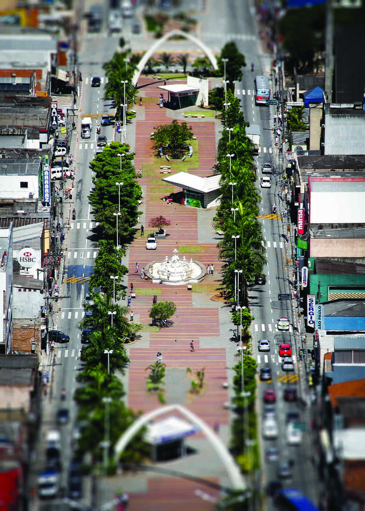
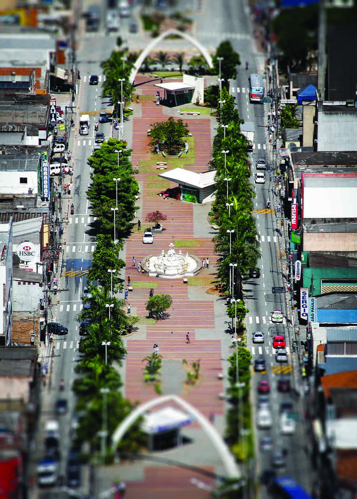

Cidade
Segundo os historiadores, a cidade foi fundada de novembro de 1560 pelo José de Anchieta Entretanto, esta afirmação pode servir como uma hipótese a ser trabalhada em oposição aos dados que constam na historiografia oficial, que dá a data de 1610 como da implantação do estabelecimento pelo padre João de Almeida. A aldeia indígena Barueri cresceu rapidamente, tornando-se dos mais importantes aldeamentos de índios do Brasil Colônia. Resistiu bravamente com a ajuda dos padres jesuítas aos frequentes ataques de bandeirantes que desciam o Rio Tietê em direção ao interior aprisionando índios para mão de obra escrava. Baruei foi governado como aldeamento pela Câmara Municipal de São Paulo de 1560 até 1809 , depois como freguesia e distrito pela Câmara Municipal de Santana de Parnaíba. Com o decorrer dos anos e o notório crescimento, a aldeia chegou a povoado e, posteriormente, já em 1809, à categoria de freguesia. Em 1870, iniciou-se a construção da Estrada de Ferro Sorocabana e, em 1875, com a inauguração do primeiro trecho, Barueri ganhou sua estação ferroviária, tornando-se importante entreposto de cargas, rota obrigatória na ligação da cidade de São Paulo com Santana de Parnaíba e Pirapora do Bom Jesus. Em 1900, foi construída a barragem da Light e Power Company em Santana de Parnaíba. Para o transporte dos equipamentos da usina da estação da Sorocabana até Parnaíba tornou-se necessária a abertura da Rua Duque de Caxias, como alternativa para se evitar a íngrimidade da ladeira da Rua Campos Sales. Em 1917, Barueri é elevada a distrito policial e, em 1918, Barueri é elevada à categoria de distrito de paz, com subprefeito indicado. No início do século XX, Barueri, assim como a cidade de São Paulo, recebeu imigrantes vindos da Europa e Ásia. Dentre os que mais contribuíram e estiveram presentes na evolução do município, se destacam as famílias, Camargo, Silveira, Loureiro, Crudo, da Matta, dentre outras. A famílias maior parte delas, Portuguesas ou japonesas. Em 1936, foi instalada a primeira indústria da região, o Frigorífico Pisani. Pertencente ao Município e Comarca de Santana de Parnaíba, Barueri crescia a olhos vistos, suplantando a pacata e bucólica Parnaíba. O espírito autonomista não tardou a surgir entre os cidadãos e o movimento emancipacionista ganhou vulto, culminando com a criação do Município de Barueri pela Lei 233, de 24 de dezembro de 1948, sancionada pelo então Governador do Estado Adhemar de Barros. Em 26 de março de 1949, instala-se o Governo Municipal e a primeira Câmara de Vereadores. Em 8 de dezembro de 1964, é promulgada a lei que instalou a Comarca de Barueri. Em 1973, o desenvolvimento econômico de Barueri ganhou força quando a Câmara Municipal aprovou a Lei de Zoneamento Industrial, que permitiu o surgimento de empresariais como o Tamboré, Alphaville, Jubran Votupoca e Jardim Califórnia e, mais recentemente o Distrito Industrial do Votupóca. Hoje, o bairro de Alphaville é a principal fonte de arrecadação de impostos do município. Na década de 2000, Barueri ganhou notoriedade nacional através da construção da Arena Barueri, que foi considerada a melhor arena multiúso do país, e com o Grêmio Barueri, que disputou a Série A do campeonato Brasileiro 2009.

Fonte Wagih Sales Nemer

fonte Boulevard

Exército Brasileiro

Fonte Cunhatã (Mulher em tupi-guarani)

Fonte Herma de Yojiro Takaoka